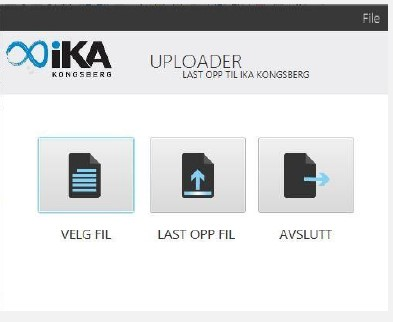

Frontend utvikler
Kongsberg
ceciliehrr@gmail.com
40019988
About
Kreativ, nyutdannet 32 år gammel informatiker med erfaring innen offentlig forvaltning, hovedsaklig innen bevaring og analyse av eldre databaser. Etter innblikk i en arbeidshverdag i det offentlige ble jeg engasjert av data, hvordan
man lagrer data, hvordan man bevarer data og hvordan man presenterer enorme mengder data på en forståelig måte.
For å lagre data med kvalitet må man se data i et helhetsperspektiv. På bakgrunn av dette så jeg at dette
er områder som har et forbedringspotensiale , og derfor ønsket jeg å utdanne meg videre innen IT for å få mer kunnskap.
På informatikklinja lærte jeg litt om alt, men forsto raskt at det er den kreative delen av IT jeg ønsket å fordype meg i, først og fremst UX og frontendutvikling. Jeg ønsker å lage digitale løsninger som har brukeren
i fokus, slik at brukere tar riktige og effektive valg i møte med digitale verktøy. Jeg ønsker å lage digitale løsninger som har gode brukergrensesnitt som gjør at brukere blir fornøyde og lojale.
Skills
HTML5
CSS
MySQL
PHP
Java
Javascript
Adobe Lightroom, Photoshop, Illustrator, After Effects, Dreamweaver
Languages
English
Ansatt som student fra januar 2019. Fikk et bacheloroppdrag som ble ferdigstilt i mai. Oppdraget gikk ut på å lage en prototyp på et brukergrensesnitt for en innbyggerportal for Lillehammer kommune. Prototypen skulle være basert
på teorier som designprinsipper, interaksjonsdesign og universell utforming. Resultatet ble en teoretisk rapport og en statisk nettside laget med HTML5, CSS og noe Javascript for skjemavalidering.
Tok et webkurs i Asset Management, mai 2019.
Rådgiver i elektroniske arkiver på Interkommunalt arkiv for Buskerud, Telemark og Vestfold. Jeg hadde ansvar for å ta imot og tar vare på gamle databaser med bevaringsverdig data (j.f. Arkivloven) fra 42 eierkommuner. Gjort undersøkelser
som har resultert i rapporter som blir referert til på f.eks OsloMet, Arkivverket og Kulturdepartementet. Lagde prosessverktøy i PHP, javascript, CSS og HTML5.
Tok kurs i PHP gjennom KDRS.
Butikkmedarbeider REMA 1000 Asker/Drengsrud og REMA 1000 Kongsberg
Postmottak, sak/arkivsystem Ephorte, resepsjon og telefon, forfallent administrasjonsoppgaver.
Billett, butikk, kiosk
Kulturjournalist i lokalavisen til Notodden, Telen.
Barnehageassistent, Bartender under Kongsberg Jazzfestival, Renhold, Butikkmedarbeider Glassmagasinet.
Bachelor i Informatikk - mangler 3 mattematikkfag
Bachelor i arkiv og dokumentbehandling
15 studiepoeng i Kulturjournalistikk
45 studiepoeng i faglærer i kunst og håndverk
Generell studiekompetanse, Kunst og Håndverk
Om å tilpasse brukergrensesnitt for mange ulike brukere. Om interaksjonsdesign, designprinsipper, universell utforming og bruk av data for å få bedre brukeropplevelser.
Sjekk ut websiden for bachelorprosjektet
HER!
Eksamen i Applikasjonsutvikling:
Jeg lagde en app i Android Studio med Java som hentet barnehagefakta fra API’et til barnehagefakta.no
Webutviklingsprosjekter på USN
Utviklet ulike komponenter for å automatisere de manuelle oppgavene en e-arkivar har. Foreløpig ferdig komponent:
- IKA Uploader. Sikker overføring av sensitiv data, jeg hadde ansvar for brukergrensesnitt laget med FXML.

Analyse av datatap ved bruk av Noarkstandarden på fagsystem. Rapport og funn finnes HER!
Dette prosessverktøyet startet jeg å utvikle for å få bedre oversikt over arbeidshverdagen på IKA Kongsberg. Utviklet i PHP, HTML og CSS. Finnes på GitHub HER!
2 dagers PHP kurs for å lære arkivrelatert PHP-koding. Arrangert av KDRS.